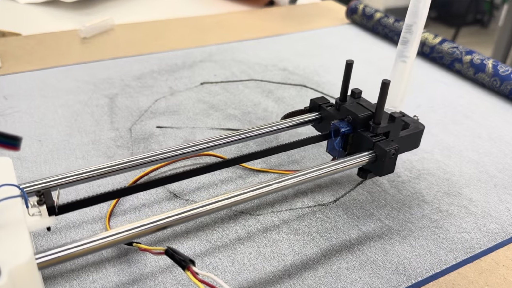
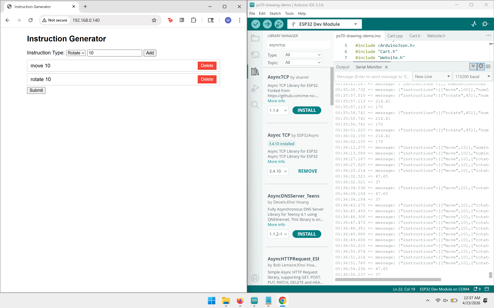

Team: Matthew, Marc, Avery, and Jolana.
For our drawing machine, our idea was to build a clock that draws the time but the drawing disappears every minute, as time progresses. Instead of using LEDs, ink, or a screen, the machine draws the hour marks and hands with a water-filled pen. This special buddha paper becomes dark when wet, but it fades as the water quickly evaporates, so the machine has to keep redrawing the time.
We broke the project into a few main jobs:
A roughly 3 ft by 2.5 ft plywood board, cut from a larger sheet, served as the base for the whole machine. The XY plotter itself came from the PS70 drawing-machine kit. Within the kit, we used aluminum extrusion rails for both axes, 3D-printed carts riding on roller wheels, timing belts and pulleys, two stepper motors, and a servo-driven pen end effector.
The most delicate mechanical step was tuning the eccentric nuts on the cart wheels. Each one had to be tight enough that the cart stayed seated on the extrusion, but loose enough that the 3D-printed carriage did not bow outward. Once the carts rolled smoothly, we mounted the carbon-fiber rods and pen holder so the machine could move the pen across the bed.
The control electronics went through three iterations before we had a stable build.
Our first build was assembled on a solderable protoboard around an ESP32-S3 dev board. On power-up the ESP32 short-circuited and started smoking. The most likely culprit was a stepper driver installed in the wrong orientation, which would have shorted the driver's logic supply directly across the rails. We did not catch it until after the smoke.
We rebuilt from scratch on a solderless breadboard, which made it much easier to verify each connection before powering up. Several fixes from this round are worth recording so we do not repeat them:
By the end of attempt 2, the ESP32 was talking to a host laptop over Wi-Fi and confirming receipt of move commands on the serial monitor, but the motors still would not actually move. A second driver eventually gave out as well.
We swapped the dev board for a Seeed Xiao ESP32-C3, picked up a fresh driver, and rewired everything to the Xiao's much smaller pinout on a clean solderless breadboard. This is the configuration that actually runs the clock.
One non-electrical detail worth flagging: the four-wire ribbon cable that connects each stepper to its driver does not have a standard color order. With four leads there are 24 possible orderings, and only two drive the motor correctly. That is roughly a 1-in-12 chance per random arrangement. The way through it is to pick a starting arrangement, and if the motor does not turn, or turns the wrong way, swap pairs systematically: A to B, then C to D, then B to C, and so on, until something works. Once the motors finally move smoothly, leave the cables alone.
Before writing the clock-specific firmware, we used a simple web interface to send move and rotate commands to the ESP32. This let us test the communication path separately from the full clock drawing logic. If the browser sent a command and the serial monitor printed it, we knew the board was reachable and parsing messages.

This stage was useful because it separated the problems we were having. With this application, Wi-Fi communication, command parsing, stepper driver wiring, motor direction, and physical motion could each be checked one at a time.
The attached firmware is a single Arduino sketch, clockdrawing.ino. It keeps the earlier Wi-Fi and WebSocket structure for compatibility, but generates its own clock-drawing instructions instead of relying on manual browser commands.
The sketch stores drawing commands in an instruction buffer. A command type of 0 means move forward, and a command type of 1 means rotate. The main loop executes one instruction at a time whenever the robot reports that the previous motion is complete.
const int MAX_NUM_INSTRUCTIONS = 200;
int instructions[MAX_NUM_INSTRUCTIONS][2];
int numInstructions = 0;
int currInstruction = 0;
void addMoveInstruction(int distMm) {
if (numInstructions >= MAX_NUM_INSTRUCTIONS) return;
instructions[numInstructions][0] = 0;
instructions[numInstructions][1] = distMm;
numInstructions++;
}
void addRotateInstruction(int angleDeg) {
if (numInstructions >= MAX_NUM_INSTRUCTIONS) return;
instructions[numInstructions][0] = 1;
instructions[numInstructions][1] = angleDeg;
numInstructions++;
}The clock face is built from helper functions. The circle is approximated as many short line segments, and the hour ticks and hands are generated from angle and length values.
const int CLOCK_RADIUS_MM = 80;
const int TICK_LENGTH_MM = 8;
const int HAND_LENGTH_H_MM = 45;
const int HAND_LENGTH_M_MM = 70;
float minuteAngle = minute * 6.0;
float hourAngle = (h12 * 30.0) + (minute * 0.5);The minute hand moves 6 degrees per minute. The hour hand moves 30 degrees per hour, plus half a degree per minute, so it sits between hour marks instead of snapping from one number to the next. The sketch gets time from NTP, generates a new clock path when the minute changes, and then lets the robot work through the queued motion commands.
Once the machine could move, the hard part became making the motion match the drawing we expected. The first satisfying milestone was simply seeing the axes move after assembly.
The most memorable bug happened when the machine tried to draw a circle but produced a sinusoidal path instead. The axis directions were not mapped correctly, so the firmware traced part of the clock face in the wrong direction instead of closing the shape. Fixing the sign and direction behavior finally gave us the expected circular motion.
After finally bringing together the base, plotter, circuit, firmware, water pen, and buddha paper, the machine began to come together. We oriented the clock so that 12 o'clock points toward the zero of the Y-axis, with the hour and minute hands sweeping around a configurable center on the bed. With water in the pen, the machine draws the face, lets the image fade, and redraws the current time.
To use the sketch, open it in the Arduino IDE with the drawing-machine support files from the starter code, select the Xiao ESP32-C3 or matching ESP32 board, install the needed ESP32 networking libraries, and upload. The serial monitor prints the Wi-Fi connection status and can be used to confirm that the board is receiving or generating instructions.